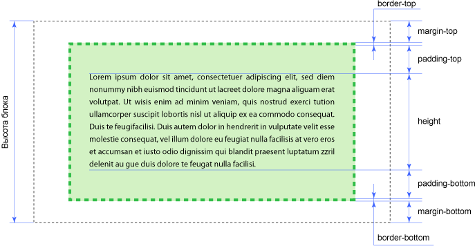
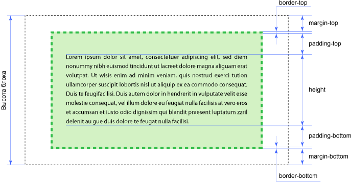

Тег — это специальный символ разметки, который применяется для
вставки различных элементов на веб-страницу таких как: рисунки,
таблицы, ссылки и др., и для изменения их вида.
HTML-документ
Обычный текстовый файл, который может содержать в себе текст,
теги и стили. Изображения и другие объекты хранятся отдельно.
Содержимое такого файла обычно называется HTML-код.
Сайт
Cайт — это набор отдельных веб-страниц, которые связаны между собой
ссылками и единым оформлением.
 
